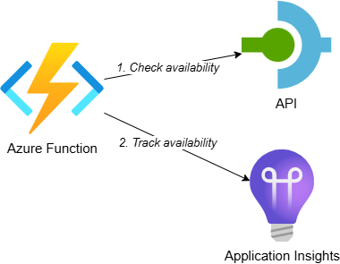
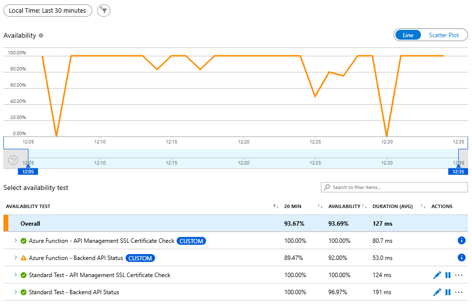
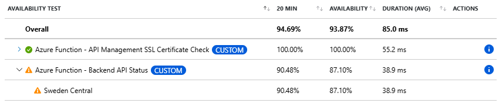

Track Availability in Application Insights using .NET

In my previous post, I showed you how to create standard availability tests in Application Insights. While these tests work well for basic HTTP(S) checks of publicly accessible endpoints, they have some restrictions that can limit their usefulness in real-world scenarios.
Standard tests don’t support multiple steps, so you can’t use them when you e.g. first need to retrieve an access token before calling your backend. They don’t support mutual TLS (mTLS) either, which is a problem if your backend requires client certificates for authentication. You also can’t refer to secrets in Key Vault and standard tests can’t access resources behind private networks since the tests run on shared Azure resources.
This post shows you how to create custom TrackAvailability tests using .NET that run as Azure Functions. This approach gives you full control over the test logic and enables scenarios that aren’t possible with standard tests. An example of this type of test is shown in Microsoft’s documentation on Application Insights availability tests, but I’ve created some generic classes to make it easier to implement new tests. While I’ll use Azure Functions in the examples, you can host these tests on other platforms like Azure App Service, Container Instances or Kubernetes as well.
This is the second post in a series about tracking availability in Application Insights:
- Track Availability in Application Insights using Standard Test
- Track Availability in Application Insights using .NET (Azure Function) - this post
- Track Availability in Application Insights using Logic App workflow
Table of Contents
- Solution Overview
- Basic Test
- Generic Availability Test Implementation
- HTTP GET Request Test
- Viewing Availability Test Results
- Setting Up Alerts
- Considerations
- Conclusion
Solution Overview
The solution includes the following components:

- Azure Function: A timer-triggered function that executes the availability test and tracks the result in Application Insights
- API: Represents a backend system for which we want to track availability. It randomly returns a 200 OK or 503 Service Unavailable response based on a configurable ‘approximate failure percentage’
- Application Insights: Receives the custom availability telemetry and shows the test results
While this example uses an API on API Management, the same approach applies when calling any other backend system for which you want to track availability.
To make deployment easier, I’ve created an Azure Developer CLI (azd) template: Track Availability in Application Insights. The template demonstrates three scenarios for tracking availability: standard test (webtest), .NET Azure Function and Logic Apps workflow. If you want to deploy and try the solution, check out the getting started section for the prerequisites and deployment instructions. This post focuses on the .NET implementation.
As mentioned in the introduction, you can host these tests on other platforms besides Azure Functions. The core tracking logic remains the same regardless of the hosting environment.
Basic Test
Let’s start with a basic example of how to track availability in Application Insights using .NET:
TelemetryConfiguration telemetryConfiguration = new()
{
ConnectionString = Environment.GetEnvironmentVariable("APPLICATIONINSIGHTS_CONNECTION_STRING"),
TelemetryChannel = new InMemoryChannel()
};
TelemetryClient telemetryClient = new TelemetryClient(telemetryConfiguration);
AvailabilityTelemetry availability = new()
{
Name = "Sample Test",
RunLocation = Environment.GetEnvironmentVariable("REGION_NAME"),
Success = false
};
try
{
// Check availability
availability.Success = true;
}
catch (Exception ex)
{
availability.Message = ex.Message;
throw;
}
finally
{
telemetryClient.TrackAvailability(availability);
telemetryClient.Flush();
}
This example shows the core concept: initialize the TelemetryClient, create an AvailabilityTelemetry object, perform your check in a try-catch block and track the result with TrackAvailability(). However, looking at the sample in the Application Insights availability tests documentation, this basic example is missing some important pieces. It doesn’t set the start time and duration of the test. It also doesn’t configure anything for end-to-end tracing where the availability test results and HTTP requests are correlated in Application Insights.
Let’s improve this implementation and make it reusable.
Generic Availability Test Implementation
Most availability tests follow the same structure: perform a check and publish the results to Application Insights. To avoid repeating this boilerplate code, I’ve created generic classes that make it easier to add new tests.
The following class diagram shows the structure:

The AvailabilityTest class handles the core logic for tracking availability. It accepts a function that performs the actual availability check, executes it within the proper telemetry context and publishes the result to Application Insights:
/// <summary>
/// Generic class for availability tests.
/// </summary>
/// <param name="name">The name of the availability test.</param>
/// <param name="checkAvailability">The function that checks the availability.</param>
/// <param name="telemetryClient">The telemetry client to publish the result to.</param>
internal class AvailabilityTest(
string name,
Func<Task> checkAvailabilityAsync,
TelemetryClient telemetryClient
) : IAvailabilityTest
{
public async Task ExecuteAsync()
{
AvailabilityTelemetry availability = new()
{
Name = name,
RunLocation = Environment.GetEnvironmentVariable("REGION_NAME") ?? "Unknown",
Success = false,
// Sets the start time of availability test
Timestamp = DateTimeOffset.UtcNow
};
Stopwatch stopwatch = new();
stopwatch.Start();
try
{
// Create activity to enable distributed tracing
// and correlation of the telemetry in App Insights
using (Activity activity = new("AvailabilityContext"))
{
activity.Start();
// Connect the availability telemetry to the logging activity
availability.Id = activity.SpanId.ToString();
availability.Context.Operation.ParentId = activity.ParentSpanId.ToString();
availability.Context.Operation.Id = activity.RootId;
await checkAvailabilityAsync();
}
availability.Success = true;
}
catch (Exception ex)
{
availability.Message = ex.Message;
availability.Properties.Add("Exception", ex.ToString());
throw;
}
finally
{
stopwatch.Stop();
availability.Duration = stopwatch.Elapsed;
telemetryClient.TrackAvailability(availability);
telemetryClient.Flush();
}
}
}
This implementation addresses the shortcomings of the basic example. It uses a Stopwatch to measure the test duration and sets the timestamp to capture when the test started. It also uses an Activity to enable distributed tracing. By creating an activity and linking it to the availability telemetry through the operation context properties, Application Insights can correlate the availability test results with any HTTP requests or other telemetry generated during the test execution. This gives you the end-to-end transaction view that’s essential for troubleshooting failures.
In the official documentation the
availability.Timestampis set in the finally block, after the check has completed. However, this records the end time of the test rather than the start time, which messes up the timeline in the end-to-end transaction details in App Insights. By setting it at the beginning of theExecuteAsyncmethod, we accurately capture when the test started.
The AvailabilityTestFactory creates instances of AvailabilityTest. I introduced this factory because AvailabilityTest has dependencies like TelemetryClient that aren’t relevant for the client code to know about. The factory handles these dependencies and provides a clean interface for creating tests.
Note that the TelemetryClient is also injected into the factory class. By configuring the following in your application’s startup, the TelemetryClient is automatically registered with the correct connection string taken from the APPLICATIONINSIGHTS_CONNECTION_STRING environment variable:
services.AddApplicationInsightsTelemetryWorkerService()
.ConfigureFunctionsApplicationInsights();
The following sequence diagram shows how these classes work together:

The flow is straightforward. First, you create an instance of AvailabilityTest through the factory by passing in the test name and a function that performs the availability check. When you execute the availability test, it calls your check function and tracks the result in Application Insights using the TelemetryClient.
Here’s how you’d use these classes in an Azure Function:
public class AvailabilityTestFunction(IAvailabilityTestFactory availabilityTestFactory)
{
[Function(nameof(AvailabilityTestFunction))]
public async Task Run([TimerTrigger("%AVAILABILITY_TESTS_SCHEDULE%")] TimerInfo timerInfo)
{
var availabilityTest = availabilityTestFactory.CreateAvailabilityTest(
"Sample Test Name", CheckAvailabilityAsync);
await availabilityTest.ExecuteAsync();
}
private async Task CheckAvailabilityAsync()
{
// Check the availability...
}
}
The function receives the factory through dependency injection, creates an availability test with a name and check function and executes it. The timer trigger runs the function every minute, based on the cron schedule 0 * * * * * defined in the AVAILABILITY_TESTS_SCHEDULE application setting.
For a complete implementation example, check out ApimSslCertificateCheckAvailabilityTest.cs in the repository. This test performs SSL certificate validation similar to what I showed in the previous post.
HTTP GET Request Test
In most cases I just want to perform a GET request to check if a URL is accessible. To make this even simpler, I created HttpGetRequestAvailabilityTest that implements this generic behavior and uses AvailabilityTest under the covers:
/// <summary>
/// Performs an HTTP GET request to check the availability of a resource.
/// </summary>
internal class HttpGetRequestAvailabilityTest : IAvailabilityTest
{
private readonly AvailabilityTest _availabilityTest;
private readonly string _requestUri;
private readonly IHttpClientFactory _httpClientFactory;
private readonly string _httpClientName;
private readonly ILogger _logger;
/// <summary>
/// Creates instance of <see cref="HttpGetRequestAvailabilityTest"/>.
/// </summary>
/// <param name="name">The name of the test.</param>
/// <param name="requestUri">The request uri to check for availability.</param>
/// <param name="telemetryClient">The telemetry client to publish the result to.</param>
/// <param name="httpClientFactory">Factory to create an HTTP client.</param>
/// <param name="loggerFactory">Factory to create a logger.</param>
public HttpGetRequestAvailabilityTest(
string name,
string requestUri,
TelemetryClient telemetryClient,
IHttpClientFactory httpClientFactory,
string httpClientName,
ILoggerFactory loggerFactory)
{
_availabilityTest = new AvailabilityTest(name, CheckAvailabilityAsync, telemetryClient);
_requestUri = requestUri;
_httpClientFactory = httpClientFactory;
_httpClientName = httpClientName;
_logger = loggerFactory.CreateLogger<HttpGetRequestAvailabilityTest>();
}
/// <inheritdoc/>
public async Task ExecuteAsync()
{
await _availabilityTest.ExecuteAsync();
}
/// <summary>
/// Performs an HTTP GET on the request URI to check for availability.
/// </summary>
private async Task CheckAvailabilityAsync()
{
using var httpClient = _httpClientFactory.CreateClient(_httpClientName);
_logger.LogInformation("Test availability of {Resource} on {BaseUrl}", _requestUri, httpClient.BaseAddress);
var response = await httpClient.GetAsync(_requestUri);
response.EnsureSuccessStatusCode();
}
}
This class wraps AvailabilityTest and provides a specialized implementation for HTTP GET requests. It uses IHttpClientFactory to create the HTTP client, which enables you to configure named clients with specific settings like base addresses, headers, timeout values or authentication handlers. The CheckAvailabilityAsync method simply performs the GET request and calls EnsureSuccessStatusCode() to fail the test if the response isn’t a 2xx status code.
The following sequence diagram shows the flow when using this test:

While this is more complex than the basic example, it makes creating new availability tests very simple. Here’s how you’d use it in an Azure Function:
/// <summary>
/// Function to test the availability of the Backend API.
/// </summary>
public class BackendStatusAvailabilityTest(IAvailabilityTestFactory availabilityTestFactory)
{
[Function(nameof(BackendStatusAvailabilityTest))]
public async Task Run([TimerTrigger("%AVAILABILITY_TESTS_SCHEDULE%")] TimerInfo timerInfo)
{
var availabilityTest = availabilityTestFactory.CreateAvailabilityTest(
name: "Azure Function - Backend API Status",
requestUri: "/backend/status",
httpClientName: "apim");
await availabilityTest.ExecuteAsync();
}
}
Creating a new HTTP GET availability test now requires just a few lines of code: define the test name, request URI and HTTP client name, then let the factory handle the rest. The factory method creates an HttpGetRequestAvailabilityTest instance that performs the GET request and tracks the result. The HTTP client name refers to a named client configured in your application’s startup, where you can set the base URL and any other HTTP client configuration.
Viewing Availability Test Results
After deploying the availability tests, you can view the results in the same places as standard tests. Navigate to your Application Insights resource and select “Availability” from the left menu:

Notice that the tests from the Azure Function have the CUSTOM label, indicating they are custom TrackAvailability tests rather than standard web tests. They also don’t have the edit, disable and … buttons because there is no web test resource in Azure associated with them.
When you expand a test to see detailed results, you’ll notice that we only have results from one region:

This is because we’re executing the availability test from a function app deployed in a single region. If you need multi-region testing with custom tests, you would deploy the function app to multiple regions.
The end-to-end transaction details show how the availability test result is correlated with the HTTP request and other telemetry:

This correlation is enabled by the Activity we created in the AvailabilityTest class. It allows you to see the complete flow of the test execution, including any HTTP requests, dependencies or exceptions that occurred during the test.
Setting Up Alerts
The enable alerts sample in the documentation shows how to enable an alert on a standard test, similar to what I showed in the previous post (through Bicep). However, with custom availability tests we don’t have an actual web test resource in Azure to bind the alert to. Instead, we need to create an alert based on the availability metrics.
Here’s how to create an alert that works for custom availability tests:
resource failedAvailabilityTestAlert 'Microsoft.Insights/metricAlerts@2018-03-01' = {
name: name
location: 'global'
properties: {
description: 'Alert that triggers when an availability test fails'
severity: 1
enabled: true
autoMitigate: true
scopes: [
appInsights.id
]
actions: [
{
actionGroupId: actionGroupId
}
]
evaluationFrequency: 'PT5M' // Execute every 5 minutes
windowSize: 'PT5M' // Look at the availability test results from the last 5 minutes
criteria: {
allOf: [
{
// Available metrics can be found here: https://learn.microsoft.com/en-us/azure/azure-monitor/app/metrics-overview?tabs=standard#available-metrics
name: 'AvailabilityMetric'
metricNamespace: 'microsoft.insights/components'
metricName: 'availabilityResults/availabilityPercentage'
// Alert triggers if the average availability percentage is less than 100%
timeAggregation: 'Average'
operator: 'LessThan'
threshold: 100
// This dimension is used to split the alerts on the name of the availability test so you get notified of each failing test separately.
// Available dimensions can be found here: https://learn.microsoft.com/en-us/azure/azure-monitor/reference/supported-metrics/microsoft-insights-components-metrics#category-availability
dimensions: [
{
name: 'availabilityResult/name'
operator: 'Include'
values: [
'*'
]
}
]
skipMetricValidation: false
criterionType: 'StaticThresholdCriterion'
}
]
'odata.type': 'Microsoft.Azure.Monitor.SingleResourceMultipleMetricCriteria'
}
}
}
This alert configuration has several key aspects worth understanding.
The alert is scoped to the Application Insights resource rather than a specific web test. It monitors the availabilityResults/availabilityPercentage metric, which is available for all availability tests tracked in Application Insights. The alert triggers when the average availability percentage drops below 100% within a 5-minute window. In production scenarios, you might want to tweak these settings to reduce false positives from transient network issues.
The availabilityResult/name dimension with a wildcard value (*) makes this alert work for all availability tests, whether they’re standard tests or custom TrackAvailability tests. This dimension also ensures that alerts are split by test name. When both test A and test B fail, you’ll receive two separate alerts, one for each test. This gives you granular visibility into which tests are failing.
Once configured, you can view fired alerts in the Azure portal by navigating to your Application Insights resource and selecting “Alerts” from the left menu. You’ll see a list of all alerts with their current state. If you click on a failed availability test alert and expand the ‘Additional details’, the availabilityResult/name dimension specifies which test has failed.

If you’ve set up an action group with an email address, the email subject will contain the name of the alert. To see which test triggered the alert, open the email and locate the Dimensions.Dimension value1 property, which will contain the test name.
This approach is great because you only need to set up the alert once and it will work for all current and future tests. However, in some cases you might want to create an alert that triggers on a specific test. For example, you might want to notify a different team when a particular backend fails. You can do this by specifying the test name in the availabilityResult/name dimension:
dimensions: [
{
name: 'availabilityResult/name'
operator: 'Include'
values: [
'Azure Function - Backend API Status'
]
}
]
This configuration will only trigger alerts for the specified test, allowing you to take different actions or handle different tests with different severity levels.
Instead of creating multiple similar alert rules for different tests, you can also use alert processing rules to add or remove action groups based on the test name. This way, you can have a single alert rule for all tests and use processing rules to customize the notification behavior per test. I cover this in more detail in this post.
Considerations
While custom availability tests offer more flexibility than standard tests, there are some considerations to keep in mind.
This solution requires you to deploy additional resources like a function app, which will incur costs. However, if you already have a function app running in your environment, depending on the hosting model, you might only pay for network traffic, logging and the minimal compute time needed to execute the tests. The cost of running a few availability tests on an existing function app is typically much lower than running multiple standard tests with high frequency from many locations.
The main tradeoff is complexity. Standard tests are simpler to set up and don’t require any code or deployments. Custom tests require more initial setup, but they give you complete control over the test logic and enable scenarios that aren’t possible with standard tests.
Conclusion
Custom availability tests using .NET and Azure Functions provide several benefits over standard tests:
- Full control: Implement complex scenarios like multi-step authentication, mTLS, secret management with Key Vault and custom validation logic
- Private network access: Deploy the function app in a VNet to test resources that aren’t publicly accessible
- Flexibility: Use any .NET libraries or SDKs to implement your test logic
- Cost efficiency: Run multiple tests from a single function app with minimal additional cost
While this approach requires more setup than standard tests, the flexibility and capabilities make it worthwhile for scenarios where standard tests fall short. The generic classes I’ve shown make it easy to create new tests with minimal code, reducing the maintenance burden once the initial infrastructure is in place.
You can find the complete working example in my track-availability-in-app-insights repository, which includes detailed deployment instructions and examples for all three availability test approaches.